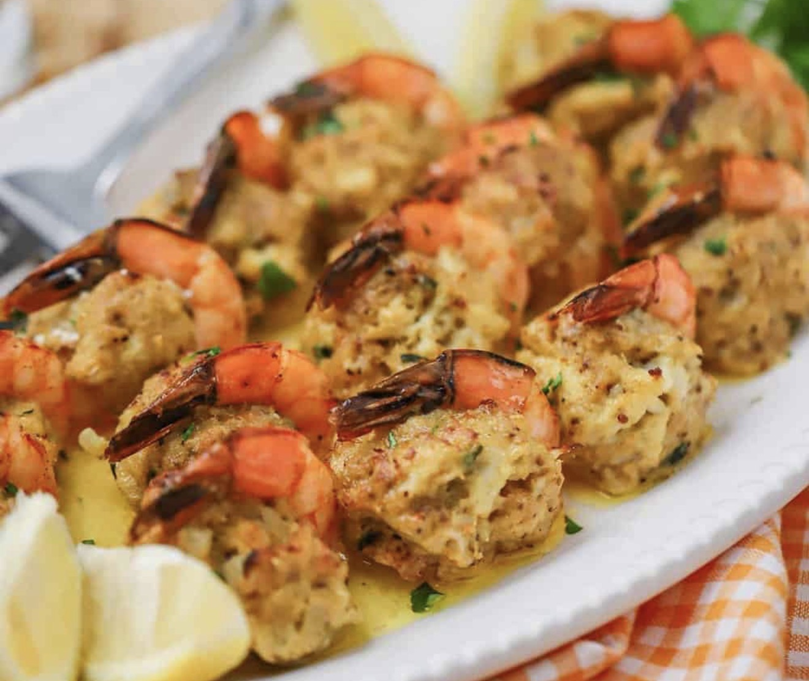
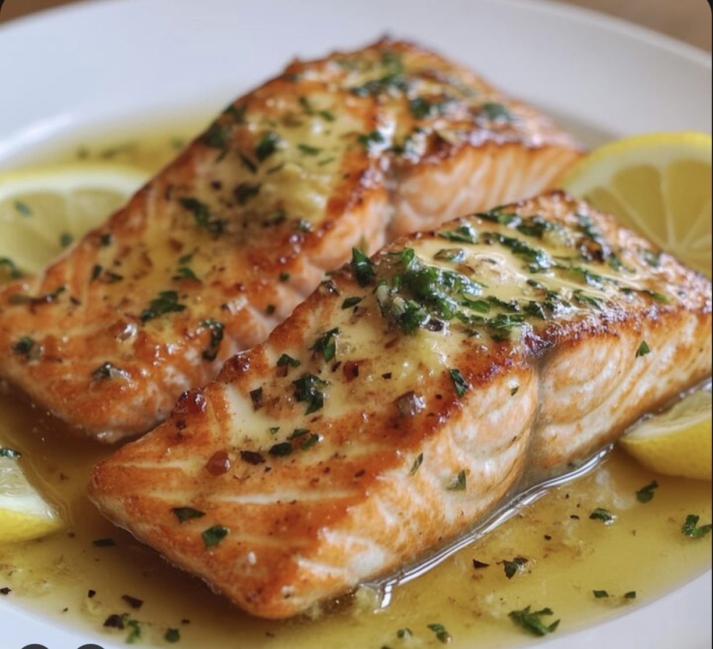

The Cooking Corner
Smothered Pork Chops
An All-Time Favorite Low country Dish

Ingredients
- 4 bone-in Pork Chops (1-inch thick)
- 1 Large Onion, sliced thin
- 2 Cloves of Garlic, minced
- 1/2 Cup Of All-purpose flour
- 2 cups of Chicken Broth
- 1/2 cup of your favorite cooking oil
- 1/2 tablespoon of your favorite seasoning salt
- 1/2 teaspoon each: garlic powder, onion powder, paprika, black pepper
- 1 tablespoon of unsalted butter (optional)
- In a shallow bowl, mix together the flour and half of the seasonings.
- Season the porkchops with the remaining seasoning. Cover the pork chops with the flour mixture, pressing it onto the meat to ensure it sticks.
- Make sure to coat both sides evenly. Set aside.
- In a large skillet, heat the cooking oil over medium-high heat. Once hot, add the pork chops and cook for about 3 minutes on each side until they are golden brown. Remove the pork chops from the skillet and set them aside on a plate.
- The pork chops will not be fully cooked at this point, but they will finish cooking in the gravy later.
- In the same skillet, add the sliced onions and cook for about 5 minutes until they are soft and translucent. Add the minced garlic and cook for an additional minute until fragrant.
- Sprinkle the remaining flour mixture over the onions and garlic, stirring well to combine. Cook for about 1-2 minutes to cook off the raw flour taste.
- Gradually pour in the chicken broth while stirring constantly to prevent lumps from forming. Continue to cook and stir until the gravy thickens, about 3-5 minutes.
- Add the tablespoon of unsalted butter to the gravy and stir until melted and well combined. This will add richness to the gravy, but it is optional.
- Return the pork chops to the skillet, nestling them into the gravy. Reduce the heat to low, cover the skillet, and let it simmer for about 20-25 minutes, or until the pork chops are cooked through and tender.
- Once the pork chops are cooked, give the gravy a final stir and adjust the seasoning if needed. Serve the smothered pork chops hot, spooning the delicious gravy over the top. Enjoy!
Instructions
Serving Suggestion: Serve the smothered pork chops with mashed potatoes, rice or even egg noodles. But I highly recommend the lowcountry way with rice!
Honey Garlic Wings
Sweet honey garlic glazed wings

Ingredients
- 2 pounds of chicken wings
- 1/4 cup of honey
- 3 cloves of garlic, minced
- 2 tablespoons of soy sauce
- 1 tablespoon of olive oil
- A sprinkle of your favorite all purpose seasoning
- 1 tablespoon of unsalted butter
- Preheat your oven to 400°F (200°C). Line a baking sheet with aluminum foil and place a wire rack on top. This will help the wings cook evenly and get crispy.
- In a large bowl, combine the honey, minced garlic, soy sauce, olive oil, and all-purpose seasoning. Mix well to create the honey garlic sauce.
- Add the chicken wings to the bowl and toss them in the sauce until they are well coated. Let them marinate for at least 30 minutes to allow the flavors to infuse.
- Arrange the marinated wings on the wire rack in a single layer. Reserve any remaining sauce for later.
- Bake the wings in the preheated oven for about 40-45 minutes, flipping them halfway through, until they are golden brown and crispy.
- While the wings are baking, pour the reserved sauce and butter into a small saucepan and heat it over medium heat until it thickens slightly, about 5 minutes.
- Once the wings are done, remove them from the oven and brush them with the thickened honey garlic sauce for an extra burst of flavor.
- Serve the honey garlic wings hot, dip wings into your favorite dipping sauce if desired. Enjoy!
Instructions
Crab Stuffed Shrimp

A delicious and easy-to-make dish featuring succulent shrimp stuffed with a flavorful mixture of crab meat and seasonings.Ingredients
- 1 lb large shrimp, peeled and deveined
- 1 cup crab meat
- 1/2 cup breadcrumbs
- 2 tablespoons mayonnaise
- 1 teaspoon Old Bay seasoning
- 1 tablespoon parsley
- butter
Instructions
- Preheat oven to 375°F.
- Butterfly the shrimp and place them on a baking dish.
- Mix crab meat, breadcrumbs, mayonnaise, seasoning, and parsley.
- Spoon the stuffing onto each shrimp.
- Drizzle melted butter over the shrimp.
- Bake for 15-18 minutes until golden brown.
- Serve hot.
Garlic Butter Salmon

A delicious and easy-to-make dish featuring tender salmon fillets cooked in a rich garlic butter sauce.
Ingredients
- 4 salmon fillets
- 1/4 cup butter
- 3 cloves of garlic, minced
- 2 tablespoons of olive oil
- 1/4 cup of white wine
- 1/4 cup of fresh parsley, chopped
- Salt and pepper to taste
Instructions
- Preheat oven to 375°F.
- Place the salmon fillets in a baking dish.
- In a small saucepan, melt the butter and sauté the garlic until fragrant.
- Add the olive oil, white wine, and parsley to the saucepan. Stir to combine.
- Season the sauce with salt and pepper.
- Pour the garlic butter sauce over the salmon fillets.
- Bake for 25-30 minutes or until the salmon is cooked through and the top is golden brown.
- Serve hot.
Fried Cabbage with Sausage
A delicious and easy-to-make dish featuring crispy fried cabbage paired with savory sausage.
Ingredients
- 1 head of cabbage, shredded
- 1 sweet onion, diced
- 1 small green pepper, diced
- 1 lb sausage, sliced
- 1/4 cup of vegetable oil
- 1/4 teaspoon of your favorite all-purpose seasoning
- salt and pepper to taste
Instructions
- In a large skillet, heat the vegetable oil over medium heat.
- Add the sausage and cook until browned.
- Add the diced onion and green pepper and cook for 2-3 minutes, or until softened.
- Add the shredded cabbage and cook for 5-7 minutes.
- Add the all-purpose seasoning, salt, and pepper. Continue to cook for another 2-3 minutes.
- Serve hot.